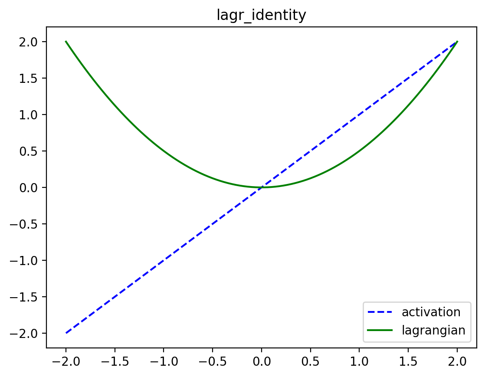
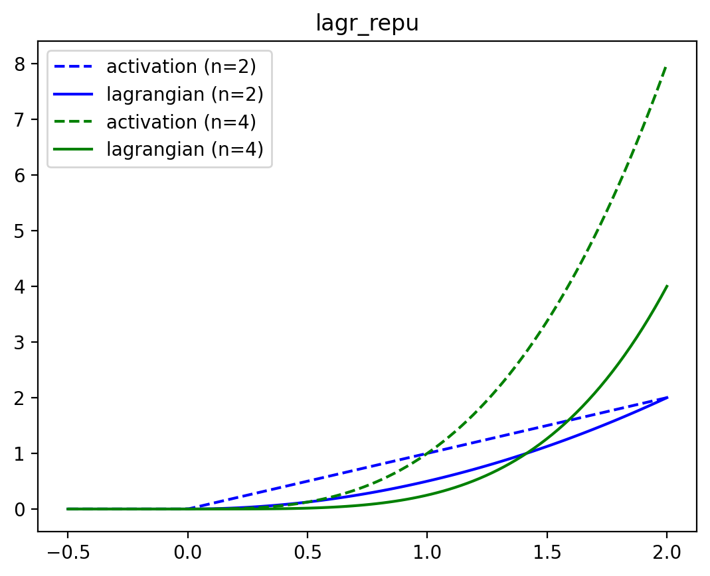
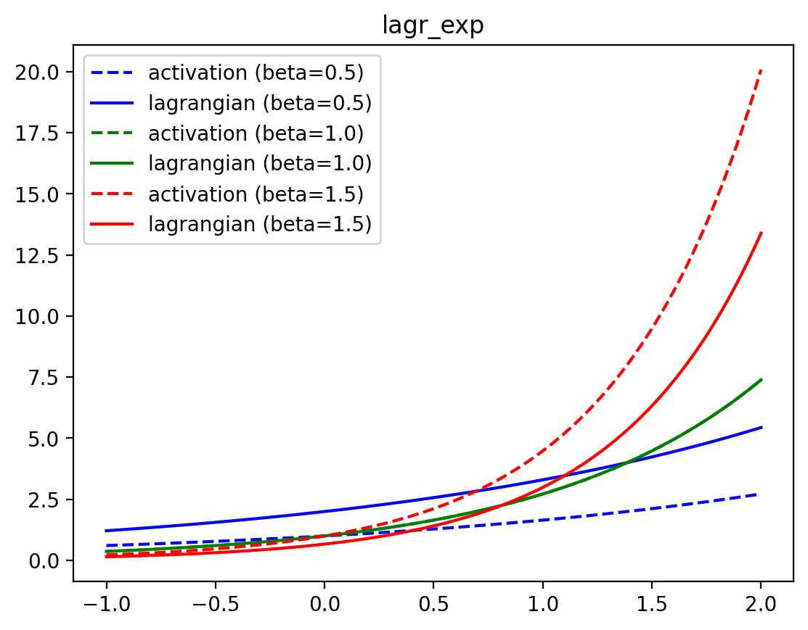
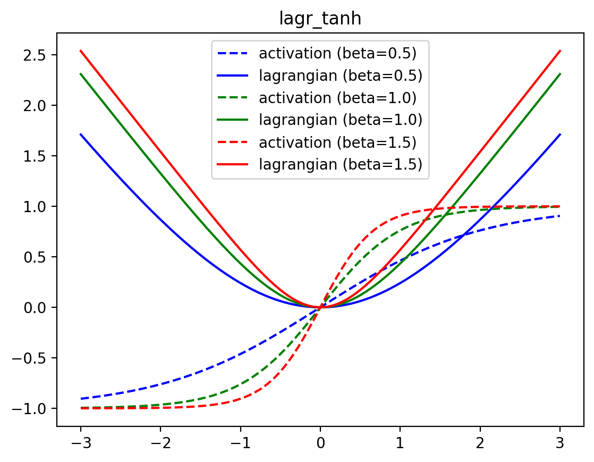
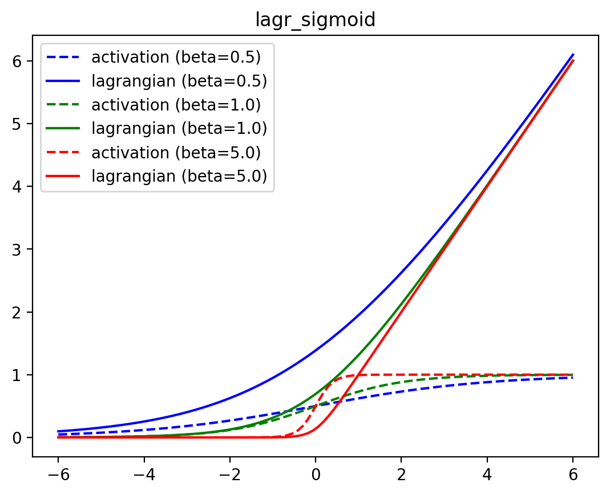
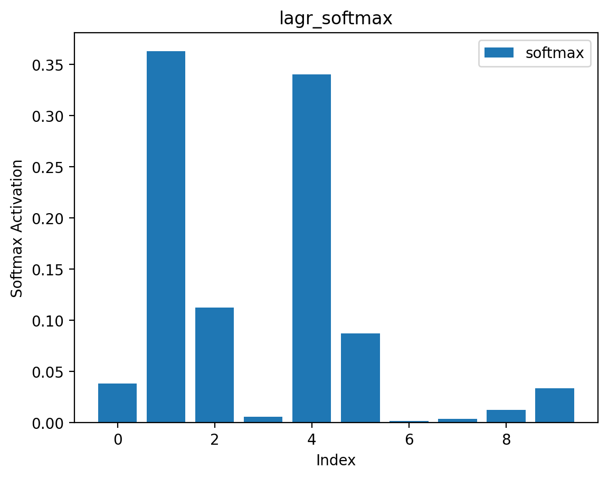

Lagrangians
The well-behaved dynamics of associative memories is described by the Lagrangians of the neurons.
NoteTL;DR
- All dynamics of Associative Memory are constrained by a Lagrangian
- The Lagrangian is a convex, scalar-valued function
- A neuron’s activations are the derivative of that neuron’s Lagrangian. These activations are often non-linear functions of the dynamic state, and look like the activation functions that we see in many modern Neural Networks (e.g.,
sigmoid,tanh,relu,softmax,LayerNorm, etc.)
Lagrangian functions are fundamental to the energy of 🌀neuron layers. These convex functions can be seen as the integral of common activation functions (e.g., relus and softmaxes). All Lagrangians are functions of the form:
\[\mathcal{L}(\mathbf{x};\ldots) \mapsto \mathbb{R}\]
where \(\mathbf{x} \in \mathbb{R}^{D_1 \times \ldots \times D_n}\) can be a tensor of arbitrary shape and \(\mathcal{L}\) can be optionally parameterized (e.g., the LayerNorm’s learnable bias and scale). Lagrangians must be convex and differentiable.
We want to rely on JAX’s autograd to automatically differentiate our Lagrangians into activation functions. For certain Lagrangians, the naively autodiff-ed function of the defined Lagrangian is numerically unstable (e.g., lagr_sigmoid(x) and lagr_tanh(x)). In these cases, we follow JAX’s documentation guidelines to define custom_jvps to fix this behavior.
Elementwise Lagrangians
Though we define Lagrangians for an entire tensor, these special “elementwise Lagrangians” take a special form: they are simply the sum of the convex, differentiable function applied elementwise to the underlying tensor. This makes it easy to plot and visualize them.
Let’s look at what some of these Lagrangians look like in practice.
lagr_identity
lagr_identity (x:jax.Array)
The Lagrangian whose activation function is simply the identity.
| Type | Details | |
|---|---|---|
| x | Array | Input tensor |
| Returns | Float | Output scalar |
\[ \begin{align*} \mathcal{L}_\text{identity}(\mathbf{x}) &= \frac{1}{2} \sum_i x_i^2 \\ \partial_{x_i} \mathcal{L}_\text{identity}(\mathbf{x}) &= x_i \end{align*} \]
lagr_repu
lagr_repu (x:jax.Array, n:float)
Rectified Power Unit of degree n
| Type | Details | |
|---|---|---|
| x | Array | Input tensor |
| n | float | Degree of the polynomial in the power unit |
| Returns | Float | Output scalar |
\[ \begin{align*} \mathcal{L}_\text{RePU}(\mathbf{x}; n) &= \frac{1}{n} \sum_i \max(x_i, 0)^n \\ \partial_{x_i} \mathcal{L}_\text{RePU}(\mathbf{x}; n) &= \max(x_i, 0)^{n-1} \end{align*} \]

lagr_relu
lagr_relu (x:jax.Array)
Rectified Linear Unit. Same as lagr_repu of degree 2
| Type | Details | |
|---|---|---|
| x | Array | Input tensor |
| Returns | Float | Output scalar |
\[ \begin{align*} \mathcal{L}_\text{relu}(\mathbf{x}) &= \frac{1}{2} \sum_i \max(x_i, 0)^2 \\ \partial_{x_i} \mathcal{L}_\text{relu}(\mathbf{x}) &= \max(x_i, 0) \end{align*} \]
lagr_exp
lagr_exp (x:jax.Array, beta:float=1.0)
Exponential activation function, as in Demicirgil et al.. Operates elementwise
| Type | Default | Details | |
|---|---|---|---|
| x | Array | Input tensor | |
| beta | float | 1.0 | Inverse temperature |
| Returns | Float | Output scalar |
\[ \begin{align*} \mathcal{L}_\text{exp}(\mathbf{x}; \beta) &= \frac{1}{\beta} \sum_i e^{\beta x_i} \\ \partial_{x_i} \mathcal{L}_\text{exp}(\mathbf{x}; \beta) &= e^{\beta x_i} \end{align*} \]

lagr_rexp
lagr_rexp (x:jax.Array, beta:float=1.0)
Lagrangian of the Rectified exponential activation function
| Type | Default | Details | |
|---|---|---|---|
| x | Array | ||
| beta | float | 1.0 | Inverse temperature |
| Returns | Float | Output scalar |
lagr_tanh
lagr_tanh (x:jax.Array, beta:float=1.0)
Lagrangian of the tanh activation function
| Type | Default | Details | |
|---|---|---|---|
| x | Array | Input tensor | |
| beta | float | 1.0 | Inverse temperature |
| Returns | Float | Output scalar |
\[ \begin{align*} \mathcal{L}_\text{tanh}(\mathbf{x}; \beta) &= \frac{1}{\beta} \sum_i \log(\cosh(\beta x_i)) \\ \partial_{x_i} \mathcal{L}_\text{tanh}(\mathbf{x}; \beta) &= \tanh(\beta x_i) \end{align*} \]

lagr_sigmoid
lagr_sigmoid (x:jax.Array, beta:float=1.0)
The lagrangian of the sigmoid activation function
| Type | Default | Details | |
|---|---|---|---|
| x | Array | Input tensor | |
| beta | float | 1.0 | Inverse temperature |
| Returns | Float | Output scalar |

Lagrangians with competing units
We can define Lagrangians where activations are normalized in some way (i.e., where the derivative of the Lagrangian introduces some normalization factor). There are many forms of activation functions in modern Deep Learning with this structure; e.g., softmaxes, layernorms, etc. normalize their input by some value. There is a nice interpretation of these kinds of activation functions as competing hidden units.
lagr_softmax
lagr_softmax (x:jax.Array, beta:float=1.0, axis:int=-1)
The lagrangian of the softmax – the logsumexp
| Type | Default | Details | |
|---|---|---|---|
| x | Array | Input tensor | |
| beta | float | 1.0 | Inverse temperature |
| axis | int | -1 | Dimension over which to apply logsumexp |
| Returns | Float | Output scalar |
\[ \begin{align*} \mathcal{L}_\text{softmax}(\mathbf{x}; \beta) &= \frac{1}{\beta} \log \sum_i e^{\beta x_i} \\ \partial_{x_i} \mathcal{L}_\text{softmax}(\mathbf{x}; \beta) &= \frac{e^{\beta x_i}}{\sum_j e^{\beta x_j}} \end{align*} \]
We plot its activations (the softmax) for a vector of length 10 below.

lagr_layernorm
lagr_layernorm (x:jax.Array, gamma:float=1.0, delta:Union[float,jax.Array]=0.0, axis:int=-1, eps:float=1e-05)
*Lagrangian of the layer norm activation function.
gamma must be a float, not a vector.*
| Type | Default | Details | |
|---|---|---|---|
| x | Array | Input tensor | |
| gamma | float | 1.0 | Scale the stdev |
| delta | Union | 0.0 | Shift the mean |
| axis | int | -1 | Which axis to normalize |
| eps | float | 1e-05 | Prevent division by 0 |
| Returns | Float | Output scalar |
\[ \begin{align*} \mathcal{L}_\text{layernorm}(\mathbf{x}; \gamma, \delta) &= D \gamma \sqrt{\text{Var}(\mathbf{x}) + \epsilon} + \sum_i \delta_i x_i \\ \partial_{x_i} \mathcal{L}_\text{layernorm}(\mathbf{x}; \gamma, \delta) &= \gamma \frac{x_i - \text{Mean}(\mathbf{x})}{\sqrt{\text{Var}(\mathbf{x}) + \epsilon}} + \delta_i \end{align*} \]
lagr_spherical_norm
lagr_spherical_norm (x:jax.Array, gamma:float=1.0, delta:Union[float,jax.Array]=0.0, axis:int=-1, eps:float=1e-05)
Lagrangian of the spherical norm (L2 norm) activation function
| Type | Default | Details | |
|---|---|---|---|
| x | Array | input tensor | |
| gamma | float | 1.0 | Scale the stdev |
| delta | Union | 0.0 | Shift the mean |
| axis | int | -1 | Which axis to normalize |
| eps | float | 1e-05 | Prevent division by 0 |
| Returns | Float | Output scalar |
\[ \begin{align*} \mathcal{L}_\text{L2norm}(\mathbf{x}; \gamma, \delta) &= \gamma \sqrt{\sum_i x_i^2 + \epsilon} + \sum_i \delta_i x_i \\ \partial_{x_i} \mathcal{L}_\text{L2norm}(\mathbf{x}; \gamma, \delta) &= \gamma \frac{x_i}{\sqrt{\sum_j x_j^2 + \epsilon}} + \delta_i \end{align*} \]